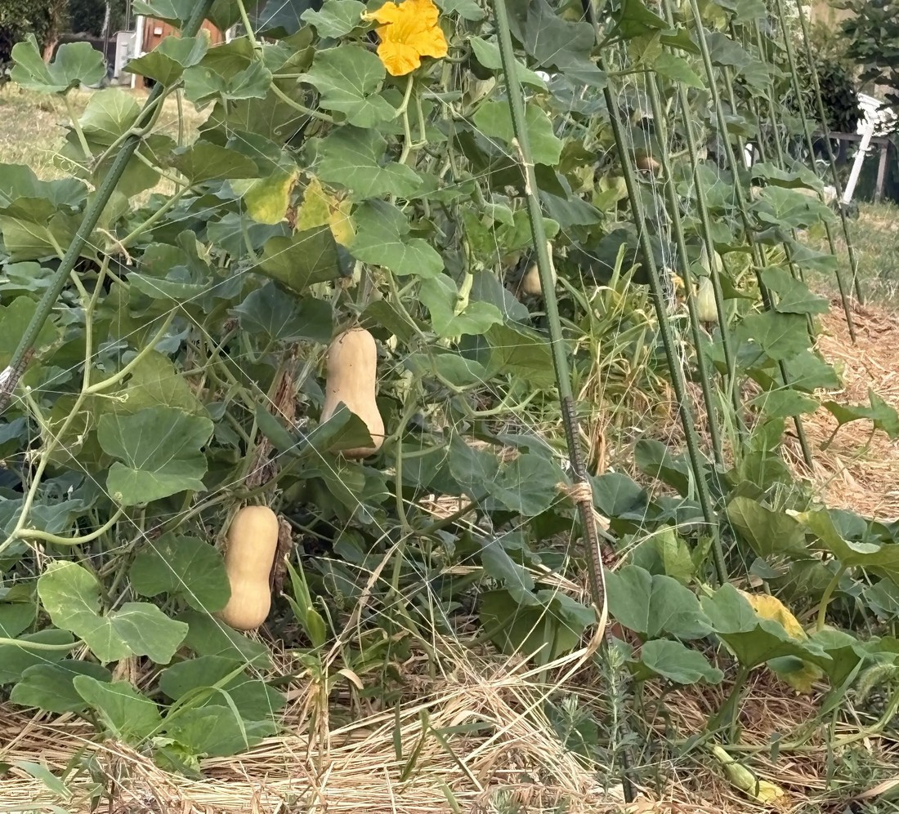

地図を読み込んでいるよ…
🔍 写真も地図も、押しているあいだ拡大して見られるよ（スマホは指を置いてすこし待ってね）。
🌍 の地図＝この子がもともと自生している場所を緑に。ニホンカボチャ（Cucurbita moschata）はメキシコ・ベリーズ・グアテマラの原産（三河の植物観察）。品種のバターナッツは、1944年ごろにアメリカ合衆国マサチューセッツ州ストウで Charles Leggett が育成した。
⭐⭐ふるさとは、メキシコ・ベリーズ・グアテマラ＝三河の植物観察がニホンカボチャ（Cucurbita moschata）の原産地として書いている場所。⭐⭐⭐でも「バターナッツ」という品種が生まれたのは、この緑の中ではない＝1944年ごろ、アメリカ合衆国マサチューセッツ州ストウの畑（Charles Leggett）＝⭐種のふるさとと、品種のふるさとがちがう子だよ。⚠アメリカは塗っていない＝品種が作られた場所であって、種が自生していた場所ではないから。⚠日本も塗っていない＝ニホンカボチャという名前だけれど、16世紀にポルトガル船がカンボジアから運んできた子で、日本はふるさとじゃない。⭐⭐213 ミニカボチャのなかまで書いた「3種はふるさとがちがう」の、中央アメリカのばん＝212のセイヨウカボチャは南アメリカ、ペポは北アメリカ〜メキシコ。⭐おまけの鶴首かぼちゃも、同じニホンカボチャ＝この緑を共有している子だよ。
⚠ 地図は国（日本と中国だけ県・省）までしか塗れないから、ほんとうの分布より広く見えていることがあるよ。地図はだいたいの場所。正確なところは、上の文を見てね。
バターナッツ（バターナッツ・スクワッシュ）
Cucurbita moschata Duchesne 'Butternut'（⚠品種名は「バターナッツ型」というところまで）
ニホンカボチャの品種／英名 butternut squash（ニュージーランド・オーストラリアでは butternut pumpkin）
ウリ科 · Cucurbitaceae（カボチャ属 Cucurbita）── ⭐図鑑で7人目のウリ科（056 キカラスウリ・090 キュウリ・138 ゴーヤ・207 ヘチマ・212 カボチャ・213 ミニカボチャのなかま）／⭐⭐カボチャ属としては3人目＝⭐⭐⭐種としては、ニホンカボチャ（C. moschata）は図鑑ではじめて（212はセイヨウカボチャ C. maxima、213は種を決めていない）／⚠科は増えないので113科のまま
燻太さんの言葉「これは…カボチャの仲間？ すべすべのクリーム色の果実に、膨らんだおしり側。こんなに大きな果実を支えられるなんて、とっても強い蔓なんだね。葉っぱも大きくて、黄色い花もへちまよりも大きそう。」── ⭐⭐⭐カボチャの仲間で当たり。そして「強い蔓」の答えは、実のつけ根にあった
名前と学名の由来 ── 「バターのようになめらか、ナッツのように甘い」
- ⭐⭐⭐「バターナッツ」は、この品種を作った人の言葉から。──マサチューセッツ州ストウの Charles Leggett が、自分の作ったカボチャを「smooth as butter and sweet as a nut（バターのようになめらかで、ナッツのように甘い）」と言った（Edible Boston・2023）。⭐皮の色ではなく、食べたときの感じが名前になっているよ。
- ⭐⭐英語の squash は、ナラガンセット語（北アメリカ先住民の言葉）の askutasquash＝「生で食べるもの」から（英語版Wikipedia）。⭐日本語ではぜんぶ「カボチャ」だけど、英語では pumpkin と squash を分けて呼ぶ＝⭐バターナッツは squash のほう（ニュージーランドでは butternut pumpkin と呼ぶ、とも）。
- ⭐属名 Cucurbita＝ラテン語で「ウリ・ヒョウタン」（212・213で書いたのと同じ）。⭐⭐種小名 moschata＝「麝香（じゃこう）の香りの」＝熟した実の甘い香りから。
- ⭐⭐⭐和名「ニホンカボチャ」なのに、生まれはアメリカ。──⚠ここがおもしろい＝ニホンカボチャ（C. moschata）という名前は、16世紀後半にポルトガル船がカンボジアから日本へ運んできた、いちばん古い系統のカボチャに付いた名前（三河「戦国時代末期の16世紀後半にポルトガル船によってカンボジアから日本に持ち込まれた」）。⭐バターナッツはその同じ種から、20世紀のアメリカで作られた品種＝だから「ニホンカボチャの品種なのに、日本には後から来た」んだ。
この植物のこと
- ⭐⭐1944年ごろ、マサチューセッツ州ストウで生まれた。──Leggett は農家ではなく保険会社の人で、家についてきた畑で試していた。⭐ねらいは「ハバード（大きくて硬いカボチャ）より小さく、形がそろい、調理しやすい実」（奥さんの Dorothy の言葉・Edible Boston）。⭐1944年12月26日の手紙で、ウォルサム試験場のカボチャ栽培者の会に「バターナッツの原作者として」招かれている。
- ⚠何と何を掛け合わせたかは、出典で割れている＝英語版Wikipedia は「pumpkin と gooseneck」、日本語版Wikipedia は「グースネックとハバード」、Edible Boston は「グースネックとほかの品種」。⭐「グースネック（首の曲がったカボチャ）が親のひとつ」だけは、3つとも一致しているよ。
- ⭐そのあと、ウォルサム試験場の Robert E. Young 教授が形をそろえて「ウォルサム・バターナッツ」になった（Edible Boston）。⭐いま日本で売られている種の多くも、この系統だと思う（⚠ここはぼくの推測）。
- ⭐⭐実は 500g〜1kg、ひょうたん形で、皮は黄褐色、熟すほど果肉が濃いオレンジになる（β-カロテンが多い・Wikipedia）。⭐種は、ふくらんだおしり側だけに入っている＝首の部分は種なしの果肉＝⭐だから切りやすくて、スープやオーブン焼きに向く。
- ⭐⭐ニホンカボチャ（C. moschata）は、3つの栽培カボチャの中でいちばん暑さと湿気に強い（英語版Wikipedia「generally more tolerant of hot, humid weather」）。⭐日本の夏に合っていたから、いちばん先に根づいたのかもしれないね。
同定について ── 落とす順番
- ⭐まず色と花で、ウリ科の中から属をしぼる＝黄色い大きな花＝カボチャ属（Cucurbita）。⚠同じクリーム色でひょうたん形の実をつけるユウガオ・ヒョウタン（Lagenaria）は、花が白いので、ここで落ちる。
- ⭐葉で、ペポカボチャを落とす＝ズッキーニやおもちゃカボチャ（C. pepo）は葉が深く切れ込んでとげとげする。この子はほぼ円形で浅く裂ける葉＝三河のニホンカボチャの記載「ほぼ円形〜広卵形、浅く3〜5裂」どおり。
- ⭐実の形で、同じ種の品種を落とす＝鶴首かぼちゃは首が曲がる／トロンボンチーノはずっと長い／この子は短くまっすぐな首と、ふくらんだおしり（Wikipedia「tan-yellow skin…with a compartment of seeds in the blossom end」）。
- ⚠⚠でも「種を決める決め手」は、まだ持っていない。──果柄（実のつけ根）を見れば決まる＝⭐ニホンカボチャは5本のうねがあって、実のところで急に広がり、木のように硬くなる（三河）／セイヨウカボチャはコルクのように太くてまるい／ペポは硬いけれど広がらない。⭐写真では、下の実のつけ根が少し広がっているように見える＝⚠でも寄った写真がないので、宿題にした。
- ⭐写っている花は雄花＝柄が長くて、うしろに小さな実がない。⭐雌花は、花のうしろに小さなバターナッツの形がもうついている＝⏳それを見るのも宿題。
- ⚠正直に＝「バターナッツ」は品種名なので、写真だけで言えるのは「バターナッツ型の C. moschata」まで。⭐どの品種かは、ヒロキくんのご両親に聞く。
⭐⭐⭐ ヒロキくんのご両親の畑から ── 9枚目
- ⭐この写真は、燻太さんのご友人ヒロキくんが送ってくれた。⭐撮ったのはヒロキくんのご両親。──⭐⭐ヒロキくんからの写真は、これで9枚目（038 フヨウ・110 サルスベリ・138 ゴーヤ・175 シソ・176 ミョウガ・198 セイロンライティア・256 ハナトウガラシ・305 ハクチョウソウ）。
- ⭐⭐支柱を合掌に組んで、ひもを張って、つるを上へのぼらせている。──⭐バターナッツは地面を這わせても育つけれど、こうして立てると実が土につかず、風通しもよくなる。⭐地面には敷きわら＝土の乾きと雑草をおさえる、ていねいな畑だと思う。
- ⭐⭐⭐燻太さんの「こんなに大きな果実を支えられるなんて、とっても強い蔓なんだね」。──⭐その答えは、たぶん果柄にある。三河はニホンカボチャの果柄を「硬くなり、木質になる」と書いている＝つるは柔らかくても、実のつけ根だけは木のように硬い＝⭐だから 500g〜1kg の実をぶら下げられる。⭐写真の2つの実は、どちらもつけ根ひとつで宙にぶら下がっている＝⚠ただし大きな品種では、ネットで実を受ける栽培者もいるよ。
- ⭐燻太さんの「黄色い花もへちまよりも大きそう」。──⚠これは、正直に言うと写真からは決めきれなかった＝三河の物差しが、207 ヘチマは「径5〜9(10)cm」、ニホンカボチャは「花冠は筒状鐘形、長さ5〜7cm」で、径と長さでちがうから。⭐写真では花が実の長さの半分くらいに見えるけれど、奥行きがちがうのでぼくの印象どまり。⏳次に会うとき、指をそえて撮ってもらえたら決まるね。
- ⚠もとの写真の上のほうには、お家が写っていた＝⭐よそのお家なので、燻太さんと相談して上を切った（⭐261 タカサゴユリで決めた「建物と看板を切る」と同じ考えかた）。
⭐⭐ 燻太さんの問い ── ウリ科の花は、ほかにも食べられている？
- ⭐⭐⭐答え＝はい、カボチャ属の花は、世界のあちこちで食べられている。──ズッキーニだけじゃないよ。
- ⭐メキシコ＝flor de calabaza（カボチャの花）。スープや、ケサディーヤの具として、とくに中央メキシコでふつうに使われる（英語版Wikipedia「Squash blossom」）。
- ⭐イタリア＝fiori di zucca。フリット（衣をつけて揚げる）や、チーズを詰めて焼く。⭐ギリシャ（kolokythoanthoi）・トルコ（kabak çiçeği dolması）では詰めものにする。
- ⭐⭐韓国＝호박꽃전（ホバッコッチョン）＝⭐これは C. moschata、つまりこの子と同じ種の花を使ったチヂミ（同上）。
- ⭐インドのベンガル地方＝kumro phool bhaja＝カボチャの花にひよこ豆の衣をつけて揚げる、夏の定番のおかず。
- ⭐⭐⭐どこの国でも共通しているのが「雄花だけを摘む」こと＝雌花は実になるから残す。⭐写真に写っているのも雄花＝⭐つまり、この花は摘んでも収穫は減らない。
- ⚠ほかの属（ヘチマ・ゴーヤ・キュウリ）については、花を食べる記録はぼくには見つけられなかった＝⭐そちらは花より、若いつるや葉を食べる記録のほうが多い（ゴーヤの葉、カボチャの若いつるなど）。⏳もし燻太さんが知っている例があったら、教えてね。
⏳ 宿題 ── 6つ
- ⏳⭐⭐⭐⭐⭐①果柄（実のつけ根）を寄って撮ってもらう＝5本のうねと、実のつけ根での広がり＝⭐これで種が決まる（三河「果時の花序柄は5本のうねがあり、果実の付着点で急に広がり、硬くなり、木質になる」）。
- ⏳⭐⭐⭐②品種名を聞く＝ウォルサム・バターナッツか、ほかの品種か（種の袋があれば一発）。
- ⏳⭐⭐③葉の表面に白い斑が出ているか見る＝三河「葉身はときに下面に白色の斑点があり」。
- ⏳⭐⭐④雌花をさがす＝うしろに小さな実がついている花（212・213と同じ宿題）。
- ⏳⭐⭐⑤収穫したら、重さと種の位置＝Wikipedia「500g〜1kg」「種はふくらんだ下部」＝⭐もし燻太さんがひとつもらえたら、327 ポポーのように1円玉で測る。
- ⏳⑥いつ・どこで撮った写真か＝ヒロキくんに聞く。
参考：三河の植物観察・ニホンカボチャ（Cucurbita moschata Duchesne／メキシコ、ベリーズ、グアテマラ原産／葉身はときに下面に白色の斑点があり、ほぼ円形〜広卵形、浅く3〜5裂／花冠は黄色、筒状鐘形、長さ5〜7cm／果時の花序柄は5本のうねがあり、果実の付着点で急に広がり、硬くなり、木質になる／和名のカボチャは16世紀後半にポルトガル船によってカンボジアから／ツルクビカボチャ（鶴首かぼちゃ）は愛知県の伝統野菜）／Butternut squash（英語版Wikipedia）（Cucurbita moschata／Charles Leggett of Stow, Massachusetts, 1944／tan-yellow skin…with a compartment of seeds in the blossom end／squash は Narragansett の askutasquash から）／バターナッツ（日本語版Wikipedia）（ニホンカボチャの品種の一つ／重さ500g〜1kg、黄褐色の果皮／膨れた下部に種が入っている）／Born in Stow: the Butternut Squash（Edible Boston・2023）（smooth as butter and sweet as a nut／ハバードより小さく調理しやすい実をねらった／1944年12月26日の手紙／Waltham Field Station の Robert E. Young 教授が Waltham Butternut に）／Cucurbita moschata（英語版Wikipedia）（暑さと湿気に強い／花・若い葉・種も食用）／Squash blossom（英語版Wikipedia）（flor de calabaza／fiori di zucca／호박꽃전は C. moschata／雄花だけを摘む）／Kumro Phool Bhaja（GOYA）（ベンガルのカボチャの花の揚げもの／雄花だけを摘む）